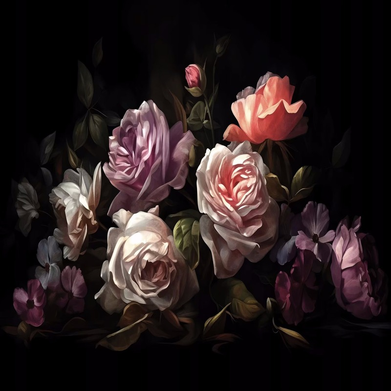

Bloom Room
Let's talk about flowers
Symbolism of Flowers
Rose
Meaning: Roses symbolize love and passion. The color of the rose often conveys different sentiments:
Red: Deep love and respect
Pink: Gratitude and admiration
White: Purity and new beginnings
Yellow: Friendship and joy
Orange: Enthusiasm and fascination
Usage: Roses are commonly used in romantic gestures, weddings, and to express deep emotions.
They are also used in perfumes and cosmetics.
Sunflower
Meaning: Sunflowers represent adoration, loyalty, and longevity. Their bright, sunny appearance
is associated with positivity and happiness.
Usage: Sunflowers are often used in floral arrangements to brighten up spaces. They also have
practical uses; their seeds are a popular snack and are used in cooking and baking.
Orchid
Meaning: Orchids symbolize beauty, strength, and exotic elegance. They are often associated with
luxury and refined beauty.
Usage: Orchids are used in upscale floral arrangements and decorations. They are also cultivated
for their beauty and are popular as houseplants.
Lily
Meaning: Lilies are often associated with purity and renewal. They are commonly used in funerals and
memorials to symbolize the restoration of the soul.
Usage: Lilies are used in a variety of arrangements, including weddings and other ceremonial events.
Their essential oils are also used in perfumes
and aromatherapy.
Tulip
Meaning: Tulips symbolize perfect love and grace. They are also seen as a sign of new beginnings and rebirth.
Usage: Tulips are popular in spring gardens and floral arrangements. They are often used in bouquets to convey
a message of love and admiration.
Daisy
Meaning: Daisies represent innocence, purity, and new beginnings. They are often associated with childhood and
simplicity.
Usage: Daisies are frequently used in casual and cheerful floral arrangements. They are also used as ground cover
in gardens due to their low maintenance.
Lavender
Meaning: Lavender symbolizes calmness, peace, and serenity. It is often associated with relaxation and purity.
Usage: Lavender is used in aromatherapy for its calming properties. It is also used in cooking, herbal remedies,
and as a natural air freshener.
Peony
Meaning: Peonies symbolize prosperity, good fortune, and romance. They are often associated with honor and wealth.
Usage: Peonies are popular in wedding bouquets and high-end floral arrangements. They are also grown in gardens for
their lush, fragrant blooms.
Uses of Flowers
Culinary
Edible Flowers: Some flowers are used in cooking and baking, such as nasturtiums, pansies, and marigolds.
They add color and flavor to dishes, and some are used in teas and desserts.
Medicine
Herbal Remedies: Flowers like chamomile and calendula are used in traditional medicine for their
soothing properties. Lavender is used for stress relief, and echinacea is used to boost the immune system.
Aromatherapy
Essential Oils: Flowers like lavender, rose, and ylang-ylang are used to create essential oils.
These oils are used in diffusers, baths, and massages to promote relaxation and well-being.
Decorative
Arrangements: Flowers are used in bouquets, centerpieces, and other decorative arrangements for events like weddings,
anniversaries, and celebrations.
Gardening: Many flowers are grown for their beauty in gardens and landscapes. They can
enhance the aesthetic appeal of outdoor spaces.
Cultural and Ceremonial
Festivals and Traditions: Flowers are integral to various cultural festivals and traditions,
such as Diwali and Chinese New Year,
where they symbolize prosperity and good fortune.
Funerals and Memorials: Flowers are used in funerals and memorial services to honor and remember the deceased, with
lilies and chrysanthemums being common choices.
Flowers hold a special place in human culture and daily life, offering beauty, symbolism, and practical benefits.
